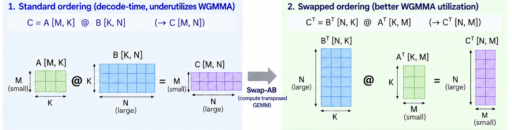

MoE推理的算力大头花在专家计算上。AWS工程师在SageMaker AI上做了三处kernel级优化：Swap-AB矩阵转置对齐WGMMA、Triton后端替代CUTLASS跑FP8、消除Triton JIT重复编译：H200上吞吐提升10%，TTFT加快9%。
MoE是稀疏激活架构：模型容量可以做得很大，但每个token只激活少数专家，单token计算量保持很低。正因为MoE的算子占据了总计算时间的很大份额，这里的低效会直接推高请求延迟和成本：优化MoE算子，是推理性能优化里回报最大的方向。
Fused MoE是MoE的关键优化技术：把token路由、数据重排和专家计算合并成GPU上的一次批量操作，而不是按顺序逐个专家起kernel循环执行。延迟下来了，但kernel实现和调试的复杂度也上来了；想把GPU利用率打满，必须做硬件相关的针对性优化。
AWS团队以一个有代表性的MoE模型为例，介绍了他们在fused MoE上做的几处kernel优化：Swap-AB提升WGMMA利用率、FP8量化下Triton后端路由、消除Triton JIT重复编译。三处合在一起，在H200上带来最高10% 的吞吐提升和最高9% 的TTFT加速。
NVIDIA Hopper架构要打满Tensor Core吞吐，靠的是WGMMA（Warp Group Matrix Multiply Accumulate）指令协议：128个线程组成的协作warpgroup集体执行。WGMMA的操作数槽位在ISA层面就不对称：底层wgmma.mma_async汇编定义里，硬件把矩阵行维度M固定为64，定义并行线程映射拓扑；列维度N则高度可变。操作数A严格映射到固定的M维度（寄存器或共享内存），操作数B映射到可变的N维度（共享内存描述符）。两个槽位结构上不可互换，峰值tile利用率就被这些刚性形状编码锁死了。
根源在于Hopper Tensor Core划分内存块的方式：硬件给第一操作数的前导维度强制规定了最小布局形状，块高锁定为64（M=64）。当数学矩阵在首槽位上拥有又大又连续的前导维度时，Hopper的硬件调度器才能干净地把数据映射分布到物理计算网格上。
这种结构不对称，在MoE的decode阶段成了严重的性能瓶颈。标准MoE层的专家计算用传统矩阵记号写成：
A[M,K] × B[K,N] → C[M,N]
其中M是token行数（batch大小），K是隐藏特征维度，N是专家输出维度。decode阶段每个用户序列一次只处理一个token，M经常掉到64以下，甚至就是1。此时：
矩阵A变成又细又碎的横向量（例如1×4096）；
矩阵B（专家权重）仍是又大又密的竖块（例如4096×8192）。
M太小，A物理上填不满硬件给操作数A规定的64行布局桶。WGMMA在这种布局上执行时，大片Tensor Core算力被饿死：硅片花时钟周期处理空的空间槽位，利用率惨淡。
标准dense层的权重矩阵静态、统一、完全连续，MoE层的工作负载却被撕碎在一群独立子网络（专家）上，对Hopper的WGMMA约束极度敏感。Fused MoE kernel里，GPU不是只跟一个专家做乘法，而是把所有活跃专家的计算分组、同时跑，避免给每个专家单独起kernel。以topk=8为例，fused kernel内部的有效N维度会膨胀到几万甚至几十万参数。N相对decode的M=1大得离谱，布局不对称被放大到极致：把矩阵转置，让这个巨大的MoE维度进入首槽位，反而解锁了标准dense层够不到的硬件预取规模。

解法不改变模型的数学正确性，只利用矩阵转置的代数性质：
B^T[N,K] × A^T[K,M] → C^T[N,M]
在到达PTX汇编层之前，用程序把矩阵乘法翻转过来，让软件对齐Hopper硅片的真实地形。转置带来两个直接的架构红利：
第一，填满物理布局。巨大的专家维度（N=8192）被提拔到第一操作数位置（B^T），N够大，轻松淹没硬件强制的64行门槛，Tensor Core以最大局部密度运转，没有浪费的执行周期。
第二，激活异步预取。Hopper的专用硬件拷贝引擎可以在数学执行块开火前，把内存地址从共享内存异步预取进寄存器。把连续的大权重块（B^T）放在前导槽位，这些引擎就能顺滑地追踪数据布局，把预取流水线跑满。
kernel内部之外，选哪个后端执行MoE计算，对性能影响也很大。vLLM的MoE oracle会把不同量化方案路由到Triton、FlashInfer+CUTLASS或其他后端。实测发现，Hopper上FP8 tensor量化模型，Triton后端稳定跑赢默认的FLASHINFER_CUTLASS路径。
Triton在低并发MoE负载下赢CUTLASS，靠的是算子级的寄存器融合，替代了僵化的框架级矩阵数学配置。CUTLASS用标准C++ 模板结构，把FP8 tensor缩放、矩阵乘法、专家聚合当成离散的数学操作；Triton后端把整条流水线压进一次硬件pass：数据从HBM全局内存只拉一次，全程在GPU超快的本地SRAM寄存器和计算执行单元里处理完，再流回最终矩阵目标。CUTLASS被迫在中间tensor缩放步骤里反复做慢速全局显存读写往返，Triton直接消掉了这些往返。
寄存器融合还配了围绕可变token分桶设计的动态调度布局，治好了传统编译模板的一个结构性毛病：CUTLASS天生为dense、大、可预测的矩阵维度优化，遇到decode生成阶段那种流体般的超薄batch（M<64 甚至 M=1），默认的块 tiling 和线程映射结构极度低效：warp 严重欠利用，或者付出昂贵的内存 padding 开销。Triton MoE 后端擅长把这些小而碎的 token 数组动态映射到活跃专家的物理边界上，即使在极低 batch 的不稳定负载下，也让硬件预取流和 Tensor Core 流水线保持饱和。
改路由策略是纯配置变更，一行kernel代码都不用动，FP8量化的fused MoE模型在H200上端到端吞吐提升10%。该优化已进入AWS大模型推理（LMI）v28容器。
GPU推理里最有杀伤力的性能病，恰恰最不起眼：不必要的kernel重编译。Triton默认会对整数参数做特化：每次kernel被以前没见过的特化参数值调用，就触发一次全新的即时编译。serving负载里序列长度和batch大小一直在变，于是编译开销细水长流地膨胀延迟，尤其拖慢TTFT。
MoE serving里，负责fused RoPE和FP8量化的 _fused_inv_rope_fp8_quant_per_head kernel，每遇到一个新的num_tokens值就重编译一次。给变长参数加上do_not_specialize注解，重编译彻底消失，H200上8路张量并行TTFT提升9%。
多GPU集群里，8张卡必须以微秒级同步执行kernel。只要有一张卡因为本地token batch数变了而停下来重编译，另外七张就干等。消掉整个集群的重编译，多GPU协同开销被抹平，用户首字延迟加速9%。这里的启示是把编译器当成一等优化面：理解Triton的特化语义，分清哪些参数是死的、哪些是变的，极小的代码改动就能换来可观的延迟收益。
该优化已上游到vLLM，0.22.0及更高版本可用。
三处优化都已通过与vLLM社区的协作实现并开源，应用在SageMaker AI的LMI深度学习容器里。合在一起：吞吐最高提升10%，TTFT最高加快9%。
对推理工程师的takeaway很直接：decode阶段M=1是常态，任何假设「batch够大」的kernel设计在MoE面前都会露馅；后端路由和编译器特化这种「非kernel代码」层面的改动，经常比手写kernel的收益更大。
参考：